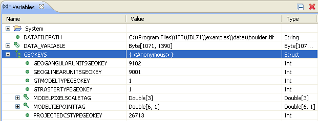

The READ_TIFF function reads single or multi-channel images from TIFF format files and returns the image and color table vectors in the form of IDL variables.
Image dimensions may exceed the capacity of IDL integers and even unsigned integers (respective limits being 32,767 and 65,535). Therefore, it is a good idea to know your data or always use long integers.
Image data may exceed the capacity of machine memory, especially RAM and perhaps even virtual memory. When reading large TIFF files, we recommend that you read only a subset of the image with READ_TIFF's SUB_RECT keyword. Reading a subset of large image data also improves application and overall machine performance.
Note: To find information about a potential TIFF file before trying to read its data, use the QUERY_TIFF function. The obsolete routine TIFF_DUMP may also be used to examine the structure and tags of a TIFF file.
Result = READ_TIFF( Filename [, R , G , B ] [, CHANNELS = scalar or vector ] [, DOT_RANGE = variable ] [, GEOTIFF = variable ] [, ICC_PROFILE = variable ] [, IMAGE_INDEX = value ] [, INTERLEAVE ={0 | 1 |2}] [, ORIENTATION = variable ] [, PHOTOSHOP = variable ] [, PLANARCONFIG = variable ] [, SUB_RECT = [x , y , width , height] ] [, / VERBOSE ] )
READ_TIFF returns a byte, integer (signed or unsigned), long integer (signed or unsigned), 64-bit long integer (signed or unsigned), floating-point, double-precision floating-point, complex, or double-precision complex array (based on the data format in the TIFF file) containing the image data. The dimensions of the Result are [ Columns , Rows ] for single-channel images, or [ Channels , Columns , Rows ] for multi-channel images, unless a different type of interleaving is specified with the INTERLEAVE keyword.
Note: Although TIFF files may contain image orientation data, READ_TIFF always returns image pixels in the same order as they are stored in the file. See the ORIENTATION keyword for additional details.
For 1-bit (bilevel) images, the image values are 0 or 1. For 4-bit grayscale images the image values are in the range 0 to 15.
RGB images are a special case of multi-channel images, and contain three channels. Most TIFF readers and writers can handle only images with one or three channels.
As a special case, for three-channel TIFF image files that are stored in planar interleave format, and if four parameters are provided, READ_TIFF returns the integer value zero, sets the variable defined by the PLANARCONFIG keyword to 2, and returns three separate images in the variables defined by the R , G , and B arguments.
Note: In IDL versions prior to 7.0.6, IDL incorrectly returned signed 32-bit integers for TIFF files that contained unsigned 32-bit integers. As of version 7.0.6, IDL correctly returns unsigned 32-bit integers.
A scalar string specifying the full pathname of the TIFF file to read.
Named variables that will contain the Red, Green, and Blue color vectors of the color table from the file if one exists. If the TIFF file is written as a three-channel image, interleaved by plane, and the R, G, and B parameters are present, the three channels of the image are returned in the R, G, and B variables.
Set this keyword to a scalar or vector giving the channel numbers to be returned for a multi-channel image, starting with zero. The default is to return all of the channels. This keyword is ignored for single-channel images, or for three-channel planar-interleaved images when the R , G , and B arguments are specified.
Set this keyword to a named variable in which to return a two-element integer array containing the TIFF DotRange tag value. If DotRange is not defined in the TIFF file, then a scalar zero will be returned instead. The DotRange tag is typically only present in CMYK TIFF files. DOT_RANGE[0] gives the image value that corresponds to a 0% dot, while DOT_RANGE[1] gives the image value that corresponds to a 100% dot.
Returns an anonymous structure containing one field for each of the GeoTIFF tags and keys found in the file. The GeoTIFF structure closely resembles the TIFF structure, storing projection parameters in a set of keys, which are explained in the GEOTIFF Structures table, below. If no GeoTIFF information is present in the file, the returned variable is undefined. See Example 4 below for how to use the GEOTIFF keyword.
According to http://remotesensing.org , the purpose of the GeoTIFF specification is to define a set of TIFF tags to describe the cartographic information in TIFF imagery that comes from satellite imaging systems, scanned aerial photography, scanned maps, digital elevation models, or from geographic analyses. The specification allows you to tie a raster image to a known model space or map projection.
The tags documented in the GeoTIFF specification are unrelated to the raster data descriptions in the TIFF specification. GeoTIFF tags and keys occasionally change, so refer to the GeoTIFF Specification for the most current information.
The GeoTIFF structure is formed using any subset of the fields named in the following table.
|
Anonymous Structure Field Name |
IDLDatatype |
|
TAGS: |
|
|
"MODELPIXELSCALETAG" |
DOUBLE[3] |
|
"MODELTRANSFORMATIONTAG" |
DOUBLE[4,4] |
|
"MODELTIEPOINTTAG" |
DOUBLE[6,*] |
|
KEYS: |
|
|
"GTMODELTYPEGEOKEY" |
INT |
|
"GTRASTERTYPEGEOKEY" |
INT |
|
"GTCITATIONGEOKEY" |
STRING |
|
"GEOGRAPHICTYPEGEOKEY" |
INT |
|
"GEOGCITATIONGEOKEY" |
STRING |
|
"GEOGGEODETICDATUMGEOKEY" |
INT |
|
"GEOGPRIMEMERIDIANGEOKEY" |
INT |
|
"GEOGLINEARUNITSGEOKEY" |
INT |
|
"GEOGLINEARUNITSIZEGEOKEY" |
DOUBLE |
|
"GEOGANGULARUNITSGEOKEY" |
INT |
|
"GEOGANGULARUNITSIZEGEOKEY" |
DOUBLE |
|
"GEOGELLIPSOIDGEOKEY" |
INT |
|
"GEOGSEMIMAJORAXISGEOKEY" |
DOUBLE |
|
"GEOGSEMIMINORAXISGEOKEY" |
DOUBLE |
|
"GEOGINVFLATTENINGGEOKEY" |
DOUBLE |
|
"GEOGAZIMUTHUNITSGEOKEY" |
INT |
|
"GEOGPRIMEMERIDIANLONGGEOKEY" |
DOUBLE |
|
"PROJECTEDCSTYPEGEOKEY" |
INT |
|
"PCSCITATIONGEOKEY" |
STRING |
|
"PROJECTIONGEOKEY" |
INT |
|
"PROJCOORDTRANSGEOKEY" |
INT |
|
"PROJLINEARUNITSGEOKEY" |
INT |
|
"PROJLINEARUNITSIZEGEOKEY" |
DOUBLE |
|
"PROJSTDPARALLEL1GEOKEY" |
DOUBLE |
|
"PROJSTDPARALLEL2GEOKEY" |
DOUBLE |
|
"PROJNATORIGINLONGGEOKEY" |
DOUBLE |
|
"PROJNATORIGINLATGEOKEY" |
DOUBLE |
|
"PROJFALSEEASTINGGEOKEY" |
DOUBLE |
|
"PROJFALSENORTHINGGEOKEY" |
DOUBLE |
|
"PROJFALSEORIGINLONGGEOKEY" |
DOUBLE |
|
"PROJFALSEORIGINLATGEOKEY" |
DOUBLE |
|
"PROJFALSEORIGINEASTINGGEOKEY" |
DOUBLE |
|
"PROJFALSEORIGINNORTHINGGEOKEY" |
DOUBLE |
|
"PROJCENTERLONGGEOKEY" |
DOUBLE |
|
"PROJCENTERLATGEOKEY" |
DOUBLE |
|
"PROJCENTEREASTINGGEOKEY" |
DOUBLE |
|
"PROJCENTERNORTHINGGEOKEY" |
DOUBLE |
|
"PROJSCALEATNATORIGINGEOKEY" |
DOUBLE |
|
"PROJSCALEATCENTERGEOKEY" |
DOUBLE |
|
"PROJAZIMUTHANGLEGEOKEY" |
DOUBLE |
|
"PROJSTRAIGHTVERTPOLELONGGEOKEY" |
DOUBLE |
|
"VERTICALCSTYPEGEOKEY" |
INT |
|
"VERTICALCITATIONGEOKEY" |
STRING |
|
"VERTICALDATUMGEOKEY" |
INT |
|
"VERTICALUNITSGEOKEY" |
INT |
Note: If a GeoTIFF key appears multiple times in a file, only the value for the first instance of the key is returned.
Selects the image number within the file to be read (see QUERY_TIFF to determine the number of images in the file).
Set this keyword to a named variable in which to return a byte array containing the TIFF ICC_PROFILE tag value. If the ICC_PROFILE tag is not contained in the TIFF file then a scalar zero will be returned instead. The ICC_PROFILE array is returned as an opaque array of byte values which the user can then pass to the WRITE_TIFF routine.
Note: The ICC_PROFILE tag is returned as an opaque array of byte values. It is assumed that the tag will be read from an existing file, and written out to a new file without modification.
For multi-channel images, set this keyword to one of the following values to force the Result to have a specific interleaving, regardless of the type of interleaving in the file being read:
|
Value |
Description |
|
0 |
Pixel interleaved: Result will have dimensions [ Channels , Columns , Rows ]. |
|
1 |
Scanline (row) interleaved: Result will have dimensions [ Columns , Channels , Rows ]. |
|
2 |
Planar interleaved: Result will have dimensions [ Columns , Rows , Channels ]. |
If this keyword is not specified, the Result will always be pixel interleaved, regardless of the type of interleaving in the file being read. For files stored in planar-interleave format, this keyword is ignored if the R , G , and B arguments are specified.
Set this keyword to a named variable that will contain the orientation value from the TIFF file. Possible return values are:
|
Value |
Description |
|
0 |
Column 0 represents the left-hand side, and row 0 represents the bottom (same as 4) |
|
1 |
Column 0 represents the left-hand side, and row 0 represents the top. |
|
2 |
Column 0 represents the right-hand side, and row 0 represents the top. |
|
3 |
Column 0 represents the right-hand side, and row 0 represents the bottom. |
|
4 |
Column 0 represents the left-hand side, and row 0 represents the bottom (same as 0) |
|
5 |
Column 0 represents the top, and row 0 represents the left-hand side. |
|
6 |
Column 0 represents the top, and row 0 represents the right-hand side. |
|
7 |
Column 0 represents the bottom, and row 0 represents the right-hand side. |
|
8 |
Column 0 represents the bottom, and row 0 represents the left-hand side. |
If an orientation value does not appear in the TIFF file, an orientation of 0 is returned.
Note: The order of the pixels contained in the returned image array is not affected by the orientation data stored in the TIFF file, or by the ORIENTATION keyword. That is, pixels are always stored in the IDL array in the same order as they are stored in the TIFF file. Since many image formats consider the upper left corner to be the origin, while IDL treats the lower left corner as the origin, this may mean that images read by READ_TIFF and displayed in IDL appear upside down. You are responsible for configuring the display to present the image in accordance with the stored ORIENTATION value. To easily create an image array that reflects orientation data stored in the TIFF file, use the IOPEN routine.
You can use the IDL ROTATE function to efficiently position the image data as specified by the file's ORIENTATION property. Set the ROTATE function DIRECTION value to one of the following based on the ORIENTATION value:
|
ORIENTATION Value |
Rotate Function DIRECTION Value |
|
0 |
0 |
|
1 |
7 |
|
2 |
2 |
|
3 |
5 |
|
4 |
0 |
|
5 |
1 |
|
6 |
6 |
|
7 |
3 |
|
8 |
4 |
Note: You can also use the IDLgrModel::Rotate method to position the image data in the display.
Set this keyword to a named variable in which to return a byte array containing the TIFF PHOTOSHOP tag value. If the PHOTOSHOP tag is not contained in the TIFF file, then a scalar zero will be returned instead. The PHOTOSHOP array is returned as an opaque array of byte values which the user can then pass to the WRITE_TIFF routine.
Note: The PHOTOSHOP tag is returned as an opaque array of byte values. It is assumed that the tag will be read from an existing file, and written out to a new file without modification.
Set this keyword to a named variable that will contain the interleave parameter for the TIFF file. This parameter is returned as 1 for TIFF files that are GrayScale, Palette, or interleaved by pixel. This parameter is returned as 2 for multi-channel TIFF files interleaved by image.
Set this keyword to a four-element array, [ x , y , width , height ], that specifies a rectangular region within the file to extract. Only the rectangular portion of the image selected by this keyword is read and returned. The rectangle is measured in pixels from the lower left corner (right hand coordinate system).
Tip: For tiled TIFF images, use the TILE_SIZE tag returned by QUERY_TIFF to determine the optimal sizes for the SUB_RECT keyword.
Produce additional diagnostic output during the read.
Read the file my.tif in the current directory into the variable image , and save the color tables in the variables, R , G , and B by entering:
image = READ_TIFF('my.tif', R, G, B)
To view the image, load the new color table and display the image by entering:
TVLCT, R, G, B
TV, image
Write and read a multi-image TIFF file. The first image is a 16-bit single-channel image stored using compression. The second image is an RGB image stored using 32-bits/channel uncompressed.
PRO ex_read_tiff
; Write the image data:
data = FIX(DIST(256))
rgbdata = LONARR(3,320,240)
WRITE_TIFF,'multi.tif',data,COMPRESSION=1,/SHORT
WRITE_TIFF,'multi.tif',rgbdata,/LONG,/APPEND
; Read the image data back:
ok = QUERY_TIFF('multi.tif',s)
IF (ok) THEN BEGIN
FOR i=0,s.NUM_IMAGES-1 DO BEGIN
imp = QUERY_TIFF('multi.tif',t,IMAGE_INDEX=i)
img = READ_TIFF('multi.tif',IMAGE_INDEX=i)
HELP,t,/STRUCTURE
HELP,img
ENDFOR
ENDIF
END
Write and read a multi-channel image:
data = LINDGEN(10, 256, 256) ; 10 channels
; Write the image data:
WRITE_TIFF, 'multichannel.tif', data, /LONG
; Read back only channels [0,2,4,6,8], using planar-interleaving
img = READ_TIFF('multichannel.tif', CHANNELS=[0,2,4,6,8], $
INTERLEAVE=2)
HELP, img
IDL prints:
IMG LONG = Array[256, 256, 5]
Using READ_TIFF with the GEOTIFF keyword returns the geotiff structure associated with a geotiff file.
; Define a variable to hold the image file
dataFilePath = FILEPATH('boulder.tif', $
SUBDIR=['examples','data'])
; Run READ_TIFF with the geotiff keyword
; to expose the geotiff structure
data_variable=READ_TIFF(dataFilePath, GEOTIFF=GeoKeys)
Note: You can also open image files using File > Open File or using the IOPEN command. If you use File > Open File , IDL defines the variable names. If you use IOPEN, you define the names of the data and GeoTIFF variables.
You can view the structure of the variable that holds the GeoTIFF structure by looking at the Variables view or by typing the following at the command line.
HELP, GeoKeys, /STRUCTURE
The structure displays as follows:
** Structure <125c498>, 7 tags, length=88, data length=82, refs=1:
MODELPIXELSCALETAG
DOUBLE Array[3]
MODELTIEPOINTTAG
DOUBLE Array[6, 1]
GTMODELTYPEGEOKEY
INT 1
GTRASTERTYPEGEOKEY
INT 1
GEOGLINEARUNITSGEOKEY
INT 9001
GEOGANGULARUNITSGEOKEY
INT 9102
PROJECTEDCSTYPEGEOKEY
INT 26713
The following image is a screen capture of how the structure appears in the Variables view of the IDL Workbench:

For more information on GeoTIFF structure, see the GeoTIFF Format Specification website: http://www.remotesensing.org/geotiff/spec/geotiffhome.html
|
5.0 |
Introduced |
|
5.5 |
Deprecated ORDER keyword. |
|
6.1 |
Added DOT_RANGE, ICC_PROFILE, and PHOTOSHOP keywords |
|
Pre-6.2 |
Deprecated ORDER and UNSIGNED keywords |
|
7.0.6 |
In IDL versions prior to 7.0.6, IDL incorrectly returned signed 32-bit integers for TIFF files that contained unsigned 32-bit integers. As of version 7.0.6, IDL correctly returns unsigned 32-bit integers. |
| 8.2 | Added support for BigTIFF files. |